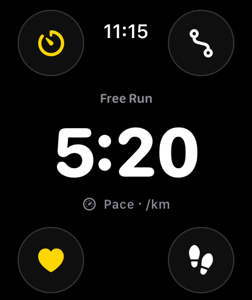

Build a running habit
Start with run-walk training or find a regular-running course that fits your background.
RUNNING PLANS · IPHONE & APPLE WATCH
Build a running habit or prepare for your next race. RunCraft brings your course, training paces and guided workouts together, so you can see what comes next.
Free download · 21-day full experience · No subscription


START WITH YOUR GOAL
You do not need a race on the calendar to get started.
Start with run-walk training or find a regular-running course that fits your background.
Save your race goal, then explore a supported course with the preparation and time it needs.
Start a free run during your trial or with Lifetime, and keep your recorded runs together.
HOW PLANS WORK
A date and a distance describe a race. Your running background helps determine the course.
Read the running guideBuild regular running, or save a race date and distance. A race name is optional; saving a goal does not replace your current course.
Review relevant recorded training and saved inputs. Correct what has changed and add only the missing information needed for the course.
Check the proposed sessions, schedule and preparation requirements before using a course. A saved goal is not a guarantee that every course fits.
BEFORE THE RUN
See the scheduled session and its purpose alongside your recent running. Training pace guidance gives each type of work its own meaning.
DURING THE RUN
Follow structured workouts on iPhone or Apple Watch, with the current step, pace and progress in view. Spend less time checking what comes next.

AFTER THE RUN
Review recorded distance, splits, pace and heart rate with available effort and weather context. Finishing a course opens a new decision, not an automatic leap in training.
How to get started, what your paces mean, and what happens after a race or a break.
SIMPLE PRICING
Free to download. One optional Lifetime purchase. No subscription or automatic renewal.
Explore plans, guided recording and analysis before deciding.
Keep importing Apple Health workouts and viewing basic history, VDOT and mileage. Starting a RunCraft workout requires Lifetime after the trial.
Unlock plans and RunCraft recording. Restore an existing purchase; eligible previous paid users retain full access.
The trial starts when you first get RunCraft from the App Store, not when you first open it. Current local pricing is shown in the app. Eligible Lifetime purchases support Apple Family Sharing.
No. Guided workouts can run directly on iPhone. A paired Apple Watch adds on-wrist guidance and controls. Data availability depends on your devices and permissions.
Not for every path. You can start with run-walk training or a free run. Some courses need relevant experience, pace guidance and enough preparation time.
No. Save the goal first, then arrange training separately. Existing sessions and history are retained; the course has its own review and preparation requirements.
No. Recovery observations provide context and caution. They do not automatically establish a replacement workout or certify that you are ready to train.
Review the next direction and relevant saved background. A new course needs its own review; old records do not automatically confirm current preparation or recovery.
RunCraft does not require a RunCraft account or use advertising or third-party analytics. Data is processed on your devices; selected records can sync through your private iCloud database. Optional support exports are shared only when you choose.
RUNCRAFT
Questions about a course, a workout or the app? Get in touch. support@marstudio.app